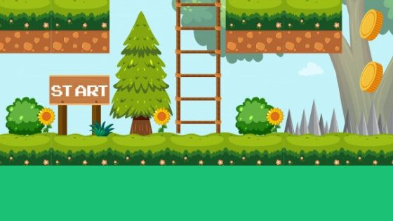

Cachoeira dos Cristais é um jogo eletrônico para a plataforma Android. Se passa no Estado de Minas Gerais e constitui uma homenagem aos elementos naturais e à cultura popular mineira. O ambiente virtual do jogo eletrônico é uma combinação de elementos reais e fictícios, com uma mecânica inovadora. Ajude Sáfara a libertar os espíritos antigos da escuridão eterna!


© Malloc Games. Todos os direitos reservados.